Кубические
Для локального видеоконтроля в небольших помещениях, офисах, переговорных и точках обслуживания.
Видеонаблюдение TRASSIR
Аналоговые и IP-камеры TRASSIR подойдут для видеонаблюдения на объектах любого масштаба — от типовых задач бизнеса и промышленности до сложных объектов критической инфраструктуры и госсектора.
Подобрать оборудование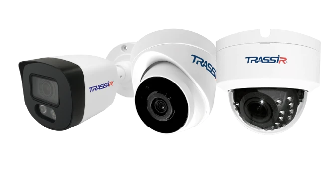
Единая экосистема. Любой масштаб.Российское
производство
Модели
в реестре РЭП
Сертификация
Минпромторга и СТ-1
Гарантия
до 5 лет
Аппаратная
аналитика
Широкий ассортимент
моделей под любые задачи
Наблюдение за входами, помещениями, периметром, парковками и рабочими зонами.
Съёмка днём и ночью, в том числе при недостаточном и контрастном освещении.
Передача видео для записи на сервер, а в моделях со встроенным архивом — локальное хранение.
Возможность рассмотреть людей, предметы и обстоятельства события.
Выявление людей, пересечения заданной границы и нахождения в области с помощью встроенных детекторов.
Просмотр происходящего через ПО или облачный сервис TRASSIR, в том числе с телефона.
Запись звука и передача голосовых сообщений в моделях с соответствующими аудиофункциями.
Предоставление изображения модулям распознавания лиц и номеров, контроля касс, очередей, складских операций и другим модулям TRASSIR.
Решения под вашу задачу
Подберите серию под задачу, бюджет и условия эксплуатации.
LITEБюджетное коробочное решение для быстрого запуска видеоконтроля. 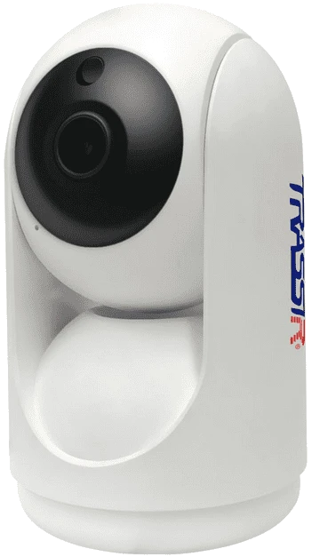 | CLOUDОблачное видеонаблюдение. 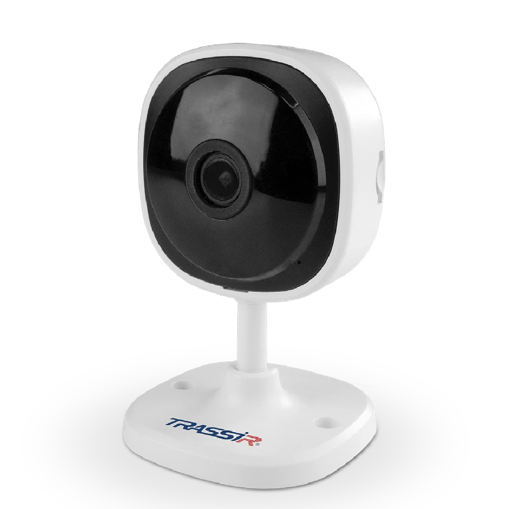 | ECOБазовые бюджетные камеры для типовых задач видеонаблюдения. 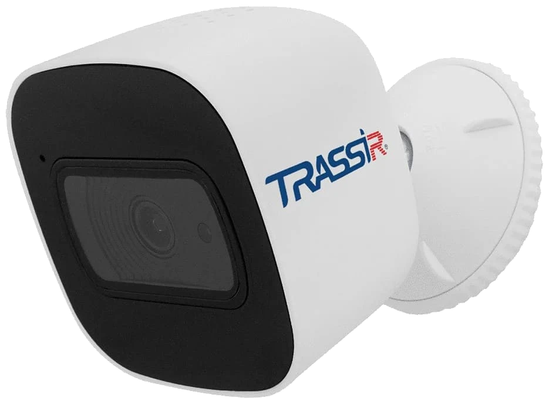 | TRENDРешают большинство задач: широкий ассортимент и аппаратная аналитика. 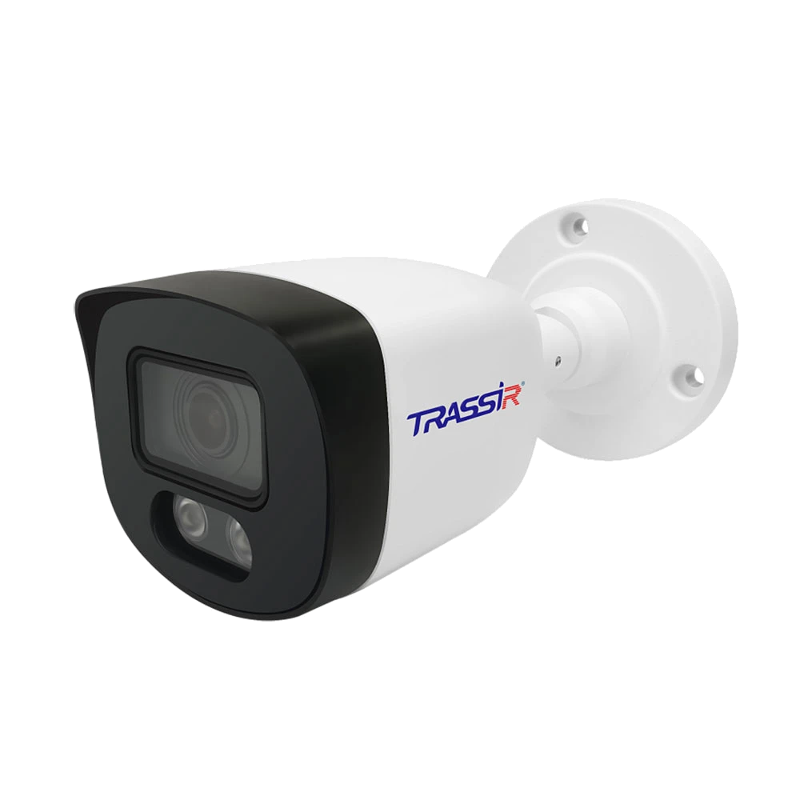 | PRO и ULTRAПроектные камеры для сложных сцен и условий эксплуатации. 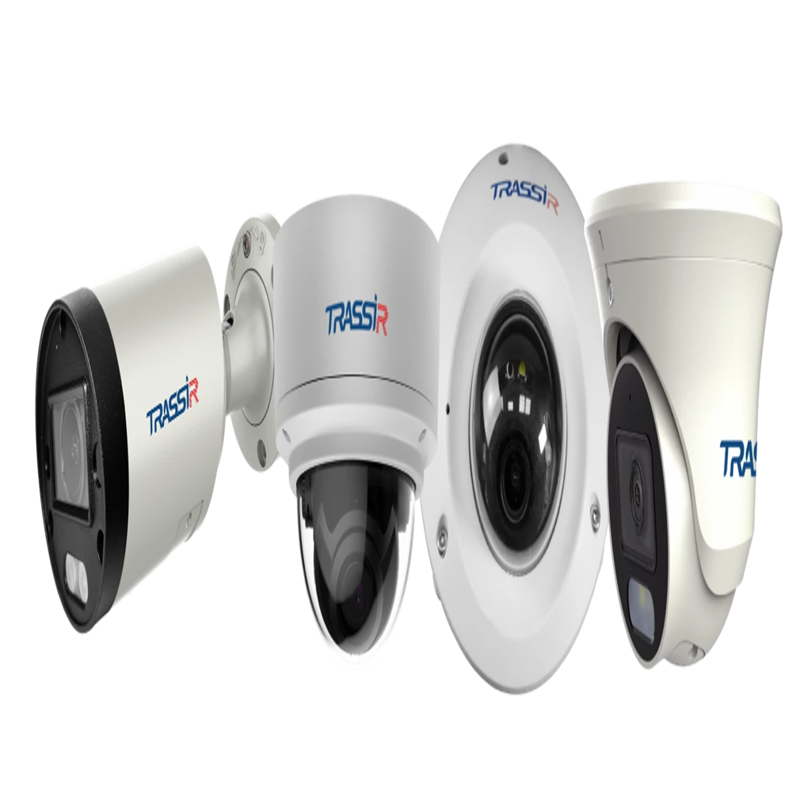 | |
|---|---|---|---|---|---|
| Разрешение, Мп | 2 | 2 | 2 / 4 | 2 / 5 / 8 | 2 / 5 / 8 |
| Объектив | Fix | Fix | Fix / VF | Fix / MZ | Fix / MZ |
| Аналитика | — | SW | SW | NN | NN |
| Аудио | Микрофон | — | — | Микрофон, I/O | Микрофон, I/O |
| GPIO | — | — | — | 1 / 1 | 1 / 1 |
| ПП № 969 | — | — | — | — | ✓ |
| СТ-1 | — | — | — | ✓ | ✓ |
| ПО TRASSIR | — | — | — | ✓ | ✓ |
| Гарантия | 2 года | 2 года | 2 года | 5 лет | 5 лет |
Fix — фиксированный объектив; VF — вариофокальный объектив; MZ — моторизированный зум; SW — программная аналитика; NN — нейросетевая аналитика; I/O — вход/выход.
Характеристики и наличие функций зависят от конкретной модели. Статус сертификации необходимо уточнять перед закупкой.
Форм-факторы
TRASSIR производит камеры разных форм-факторов для помещений, улицы, периметра и больших территорий, а также проектные решения.
Для локального видеоконтроля в небольших помещениях, офисах, переговорных и точках обслуживания.
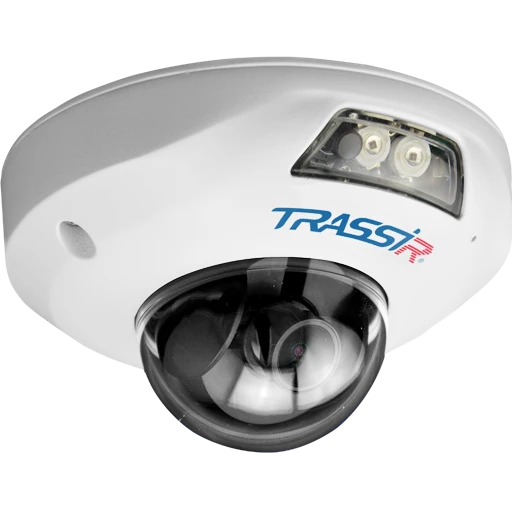
Для помещений, коридоров, торговых залов и общественных зон. Хорошо подходят для потолочного монтажа.
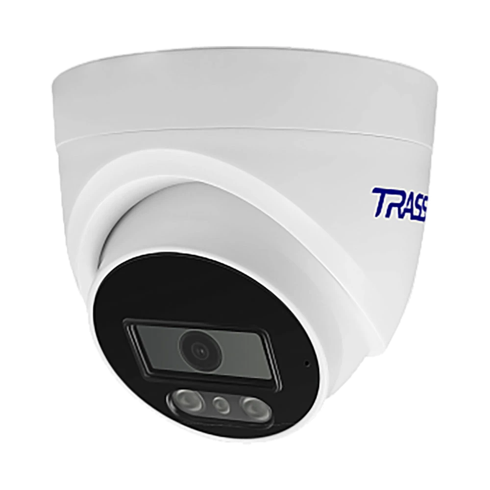
Для универсального монтажа в помещениях и на улице, когда важно быстро настроить направление обзора.
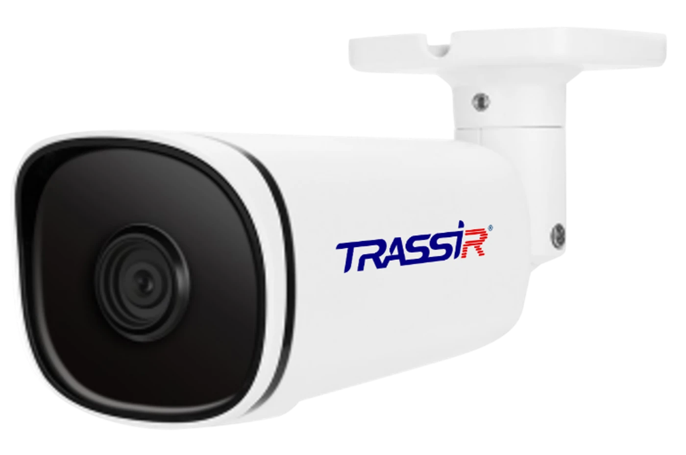
Для фасадов, въездов, периметра, складских территорий и парковок. Подходят для направленного контроля зоны.
Для проектных решений, где требуется отдельно подобрать объектив, корпус, крепление или сценарий эксплуатации.
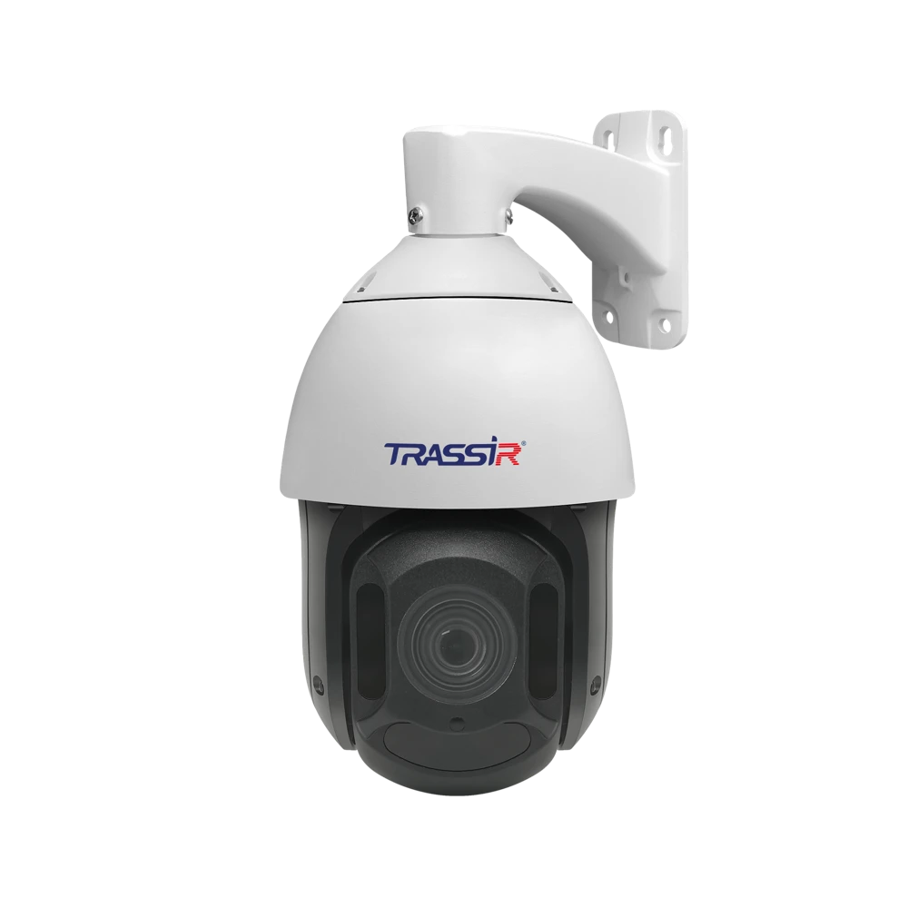
Для больших территорий, периметра и парковок, где оператору нужно менять направление обзора и приближать детали.
Для широкого обзора залов, холлов и открытых пространств, где нужно сократить количество камер без потери общей картины.
Соответствие требованиям
Модели в реестре российской радиоэлектронной продукции.
Подтверждение российского происхождения продукции.
Важно: статус конкретной модели уточняйте у менеджера.
Возможности оборудования
Большой ассортимент позволяет подобрать характеристики под реальную задачу. Для сложных проектов разрабатываются кастомизированные решения.
Широкие функциональные возможности доступны уже в базовых бюджетных моделях камер.
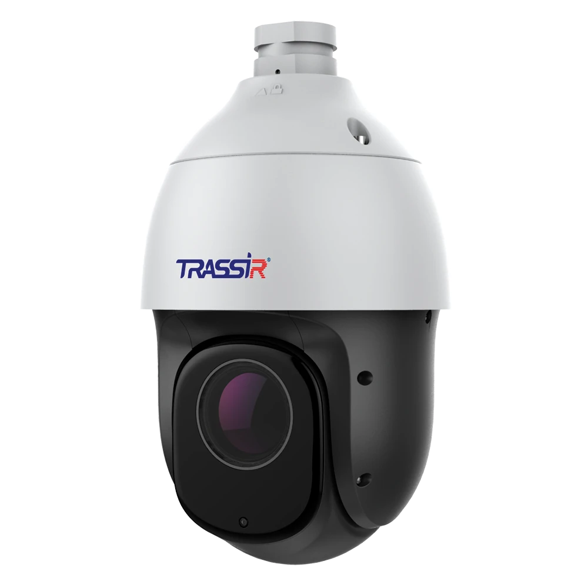
Доступны модели с высокой чувствительностью, WDR, подсветкой до 60 м, шумоподавлением и FTC, записью звука и локальным архивом.
Модели с аппаратной аналитикой и NPU распознают автономера, людей, пересечение линий, подсчитывают объекты и решают другие задачи.
Доступны камеры с защитой IP66/IP67, IK10 и рабочим диапазоном от −60 °C до +60 °C.
Поддержка популярных протоколов и совместимость со сторонними системами видеонаблюдения упрощают модернизацию уже работающих объектов.
Больше, чем камеры
 Камеры видеонаблюдения
Камеры видеонаблюдения Видеорегистраторы
Видеорегистраторы СКУД
СКУД Сетевое оборудование
Сетевое оборудование Система управления видеонаблюдением (VMS)
Система управления видеонаблюдением (VMS) Центр управления тревогами (TRASSIR PSIM)
Центр управления тревогами (TRASSIR PSIM) Мониторинг системы видеонаблюдения (TRASSIR CMS)
Мониторинг системы видеонаблюдения (TRASSIR CMS) Видеоаналитика
Видеоаналитика Облако и сервисы
Облако и сервисыШирокий модельный ряд с собственной аналитикой, продвинутой оптикой, высокой детализацией и стабильной работой в любых условиях.
Серверы под задачи любой сложности. Высокая производительность, резервирование, поддержка аналитики.
Контроль, управление доступом и аналитика. Единый контур безопасности.
PoE-коммутаторы, SFP-модули и сетевые решения, оптимизированные под видеонаблюдение, повышенная надежность и температурная устойчивость.
Централизованное управление видеосистемами любого масштаба. Масштабируемость, отказоустойчивость, гибкие сценарии управления, аналитика. Интеграция с продуктами сторонних производителей.
Обработка тревог от разных систем безопасности в едином интерфейсе. Приоритеты событий, видео и карты, инструкции для операторов. Контроль реагирования и отчеты о действиях сотрудников.
Централизованный мониторинг состояния камер и серверов на всех объектах. Уведомления о сбоях, отчеты о работоспособности, удаленное управление и обновление серверов. Работа в частном облаке компании.
Распознавание лиц и номеров, контроль перемещения, подсчет людей, обнаружение инцидентов, аналитика для бизнеса. Работает на серверах и в облаке.
Удаленный доступ, облачное хранение до 90 дней, поддержка камер от 3 месяцев. Расширение функционала.
Собственное производство полного цикла на территории Российской Федерации
Экосистема TRASSIR также включает регистраторы, ПО, сетевое оборудование и СКУД. Это помогает закрывать проекты под ключ и упрощает масштабирование.
Помощь с подбором оборудования, настройкой, проектированием и эксплуатацией системы.
Гарантия составляет от 2 до 5 лет. 82% обращений закрываем за 1–5 дней. Доступны подменный фонд и сервисные центры по всей России.
Сделано в России
Надежное оборудование. Контроль качества. Поставка под задачи.

Собственный центр разработки и исследований решений для систем видеонаблюдения
Сборка оборудования и контроль качества продукции
Продукция соответствует требованиям ГОСТ и ТУ, проходит многоступенчатый контроль качества и тестирование на каждом этапе сборки.
Сборка объективов камер происходит в чистой комнате со специальными условиями
Камеры проходят автоматическое тестирование
Каждое устройство проходит длительное тестирование на стабильность работы
Тестирование новых моделей по ГОСТ и требованиям заказчиков.
Предсерийная сборка тестовой партии перед запуском в серию.
Проверка и настройка оборудования в чистой комнате.
Проверка герметичности и устойчивости к перепадам температур.
Нагрузочное тестирование.
Контроль качества перед отгрузкой.
Подбор оборудования
От небольшой системы до сложного проекта.
Поможем выбрать подходящее решение.